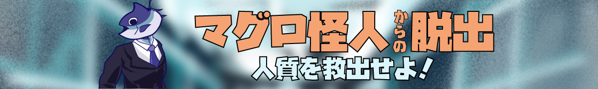

ステージ 1 /どこに彼はとらわれているの？
ヒーローのあなたに、マグロ怪人から挑戦状が届いた！
さらに意味深な地図が送られてきたが...
この方眼、縦は12345...なのに、横はQWERT... 変な方眼だな。
この挑戦状、受けて立とう！
まずはこの謎を解いて、どこの県に彼がとらわれているのかを特定だ！
そしてマグロ怪人からあの子供を救わなければ！

STAGE：2メニュー表の謎を解け！
おそらく人質がいる港にたどり着くことができた！
すると魚屋なのに魚を売っていない怪しい魚屋を見つけた！
入ってみると渡されたのはただのメニュー表...？
いや、よく見てみると裏に謎解きがあった！もしかしてこの魚のどれかがキーワードなのだろうか...
ステージ 3マグロ怪人の弱点？
カッカッカッ... 地下に繋がる扉を降りたら、なんとマグロ怪人のアジトに繋がった！
「ヒーローさん、これを！」そう言って渡された1枚の紙。
『魚の単語を消して！』
一体どのような意味が込められているのか？！謎を解いて、考えてみよう...
たて、よこ、ななめで魚の名前を消せ！
（ペンで文字を消してみよう！）
STAGE：4マグロ怪人の動きを止めろ！
マグロ怪人の弱点がわかった！
この部屋で動きを止めることのできる物はないか。
部屋を見渡すと足元にメモのようなものが落ちていることに気づいた！
これらを解くことで、きっとマグロ怪人を倒せるはずだ！